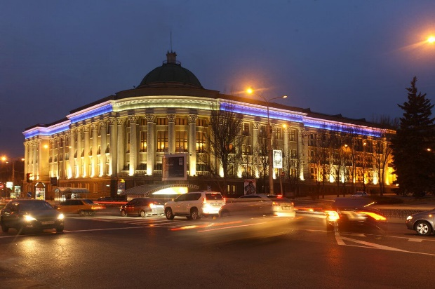
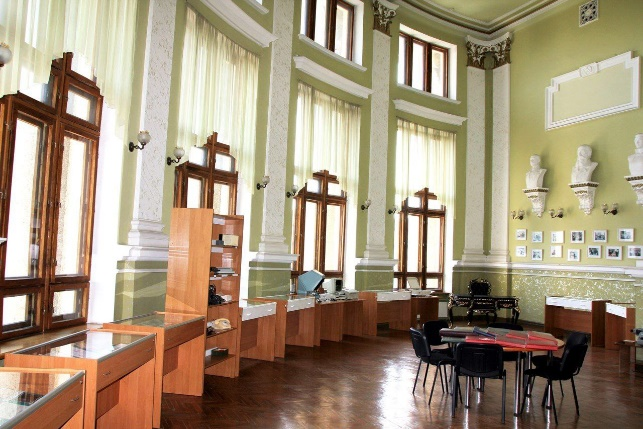
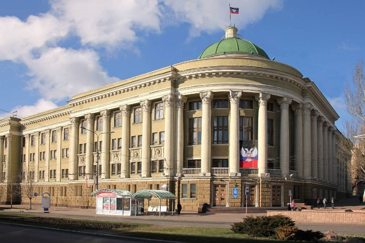

Библиотека Крупской
Библиотека была основана в 1926 году как Центральная окружная библиотека в городе Сталино (прежнее название Донецка). Первоначально библиотека располагалась в небольшом помещении и имела скромный книжный фонд. В 1932 году библиотеке было присвоено имя Надежды Константиновны Крупской, советского педагога и деятеля культуры. В довоенные годы библиотека активно развивалась, пополнялся книжный фонд, расширялся круг читателей, организовывались различные культурные мероприятия. Во время Великой Отечественной войны она была эвакуирована, чтобы сохранить книжный фонд от уничтожения. После освобождения Донбасса библиотека возобновила свою работу в 1943 году в полуразрушенном здании. Сотрудники библиотеки приложили огромные усилия для восстановления книжного фонда и обслуживания читателей в трудные послевоенные годы.
В послевоенные годы библиотека интенсивно развивалась, расширялись помещения, пополнялся книжный фонд, внедрялись новые формы библиотечного обслуживания. Библиотека стала важным культурным и информационным центром Донецкой области, обслуживая широкий круг читателей: ученых, специалистов, студентов, учащихся и всех интересующихся литературой и знаниями. В этот период библиотека активно участвовала в научно-методической работе, проводила конференции, семинары, оказывала помощь другим библиотекам области.
После провозглашения Донецкой Народной Республики в 2014 году библиотека перешла в ведение Министерства культуры ДНР. В настоящее время Донецкая республиканская универсальная научная библиотека имени Н.К. Крупской является ведущим информационным и культурным центром Донецкой Народной Республики. Библиотека является и центром краеведческой информации, собирает и хранит материалы по истории, культуре, экономике и природе Донецкого региона. Библиотека также активно развивает электронные ресурсы, предоставляя пользователям доступ к электронным книгам, базам данных и другим информационным ресурсам; организует выставки, лекции, конференции, презентации книг и другие мероприятия, направленные на популяризацию знаний и культуры.